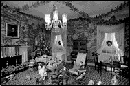

|
Period Rooms | |
|
(c) |
MacFarlane Memorial Room |
|
Move through history in nine period rooms, which include
an English Tudor room, two rooms from a house in Charleston,
South Carolina dating from the 1770s, and a late
18th-century French room. | |